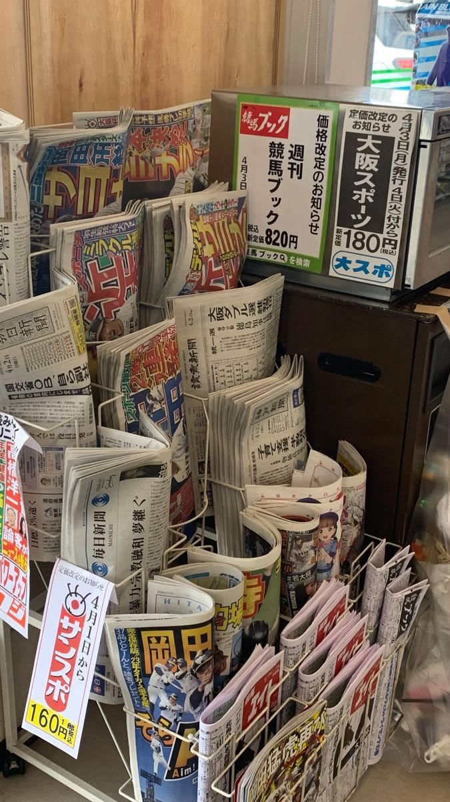

Préparer son premier voyage
Budget, transports (JR Pass ?), carte IC (Suica/PASMO), e‑SIM, étiquette, santé : prends les bonnes décisions sans te noyer.
Budget & transports
- JR Pass utile si tu enchaînes de longues distances.
- En ville : Suica/PASMO suffisent pour métro/bus.
- Hébergement : du business hotel au ryokan (repas + onsen).
Connectivité & étiquette
e‑SIM/pocket Wi‑Fi pour rester joint. Dans les trains : silencieux, voix basse, pas d’odeurs fortes. Chaussures à retirer dans certains lieux.
Check‑list express : passeport, CB + espèces, carte IC, adaptateur, assurance, réservations clés.